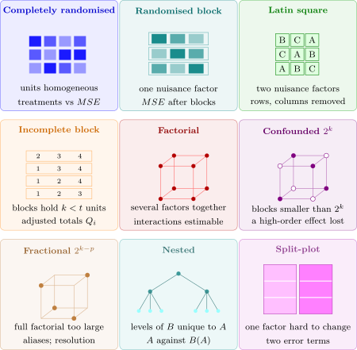

13.1 Choosing a design
Every design in the course answers three questions. How is the randomisation restricted? What is the experimental unit for each factor? And so, which mean square is the error for each test? Figure 16 summarises the answers.

The choice is made in a fixed order.
- (1)
- Identify the experimental unit for each factor: the smallest piece of material to which a level of that factor is independently applied. Measurements taken on parts of one unit are subsamples, not replicates (Problem 13.2.2). If different factors have different units, the design is split-plot (Section 12).
- (2)
- Identify the nuisance factors, and block on them. One gives a randomised block design; two crossed ones give a Latin square; blocks too small for every treatment give an incomplete block design, or for a \(2^k\) treatment structure a confounded design.
- (3)
- Decide which factors are fixed and which random (Section 11), and whether any are nested. This fixes the expected mean squares, and so the error for each test.
- (4)
- Decide the size: the number of replicates from a power calculation, or, when there are many factors, a fraction of the resolution needed.
Questions on this section
Stuck on something here? Ask below and it stays attached to this topic.